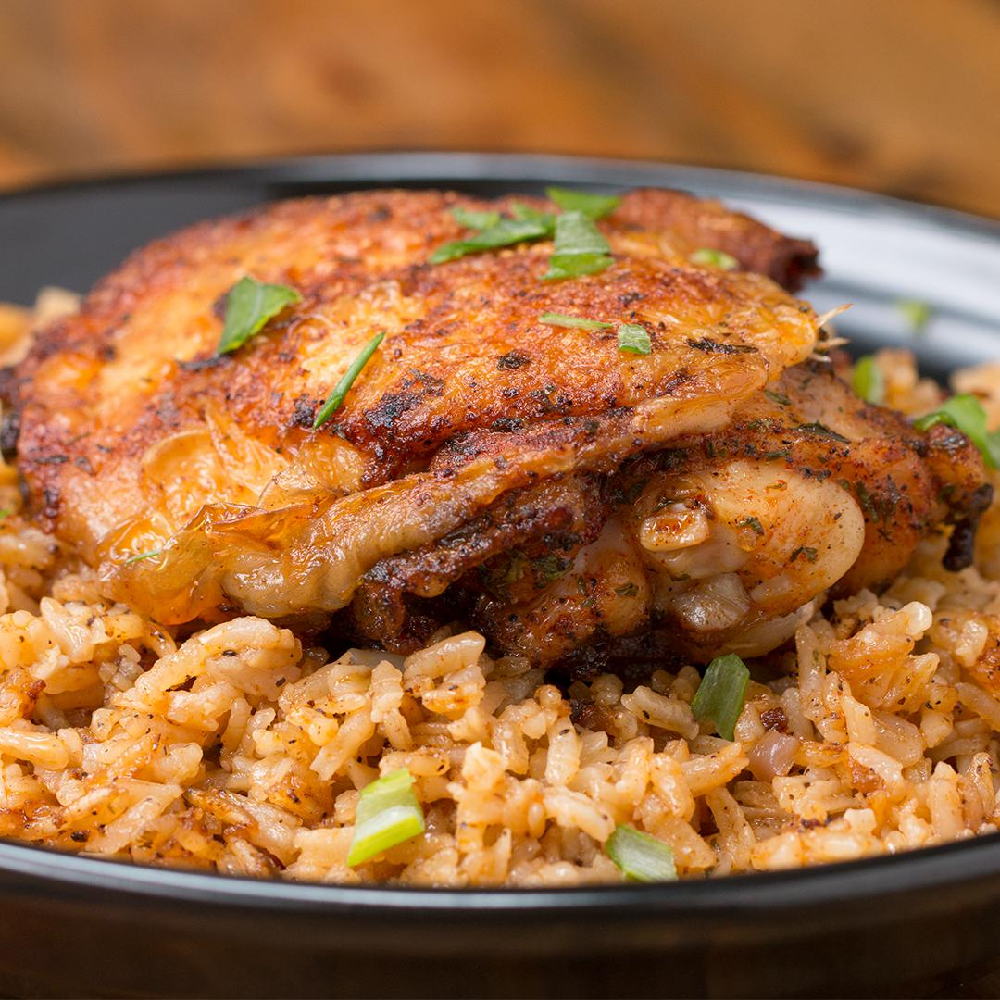

Back
Paprika Chicken and Rice Bake Recipe
By Claire Nolan
Total time: 1hr

Sometimes the best things come in one pot! This baked chicken and rice dish saves you the
cleanup without skimping on flavor. After you quickly pan fry your seasoned chicken, remove it
and cook garlic and onions in the leftover juices. Add rice and broth, cook everything, and top
with the chicken before baking for another 35 minutes (optional: broil the chicken separately to
get a crispier skin.) You'll be left with a mountain of food so delicious, you'll meal prep this
super easy recipe at least once a week forever.
Ingriedients
(Makes 5 servings)
- 5 chicken thighs
- 1 teaspoon salt
- 1 teaspoon pepper
- 1 teaspoon paprika
- 1 teaspoon dried parsley
- 1 tablespoon olive oil
- 1 tablespoon garlic, minced
- 1/2 cup red onion (75 g), diced
- 1 cup long grain rice (200 g)
- 1 1/2 cups chicken broth (360 mL)
- salt, to taste
- pepper, to taste
Instructions
- Preheat oven to 400°F (200°C).
- In a large bowl, evenly season chicken thighs with salt, pepper, paprika, and
parsley.
- On high, heat olive oil in a oven-proof pot and place chicken thighs, skin-side
down, in the hot oil. Cook 5-6 minutes or the thighs develop brown crispy skin
and flip over.
- Cook an additional 5-6 minutes to brown the other side and remove from the
pot.
- Add the garlic and onions to the pot, and cook until the onions are transparent.
- Pour in the rice and chicken broth to the pot and season with salt and pepper.
Stir well, bringing to a boil.
- Add the chicken thighs back into the pot, skin-side up, on top of the rice, bring
back to a boil and cover with a lid.
-
- Bake for 35-40 minutes, or until the rice is fully cooked.
- NOTE: For a crispy skin, remove chicken thighs and broil
- Enjoy!
Nutrition Info (per serving)
- 536 Calories
- 20g Fat
- 47g Carbs
- 3g Sugar
- 36g Protein
Back